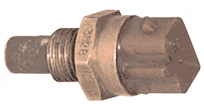
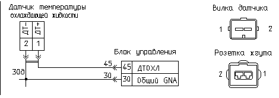
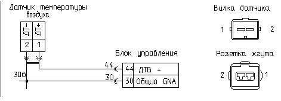

главная → ЭСУД ГАЗ
Датчик температуры охлаждающей жидкости (воздуха) 19.3828 (РФ)
Назначение датчика. Принцип действия
- Датчик температуры охлаждающей жидкости (воздуха) предназначен для преобразования температуры охлажающей жидкости (воздуха) двигателя в напряжение постоянного тока.
- Информация датчика температуры охлаждающей жидкости позволяет откорректировать основные параметры управления двигателем в зависимости от его теплового состояния.
- Информация датчика позволяет откорректировать основные параметры управления двигателем в зависимости от температуры воздуха в задроссельном пространстве двигателя.
- Датчик представляет собой полупроводниковый стабилитрон, который запитывается постоянным рабочим током от стабилизированного источника блока управления, выходное напряжение датчика изменяется в зависимости от температуры окружающей среды. С увеличением температуры выходное напряжение датчика увеличивается.
Конструкция датчика

- Конструктивно датчик состоит из следующих элементов:
- металлический корпус датчика c цилиндрическим наголовником, в котором размещен чувствительный элемент, и средней частью с резьбой М12х1,5 и гайкой под ключ S19;
- пластмассовая хвостовая часть с двухконтактной вилкой.
Параметры датчика
Параметры
- Напряжение электропитания: 5...12В.
- Рабочий ток: 0,5...5,0мА.
- Диапазон температуры окружающей среды: -40...+125°C.
- Сопpотивление датчика: 24...27кОм.
- Датчик имеет линейную зависимость выходного напряжения от температуры окружаюшей среды.
- Чувствительность датчика составляет 10 мВ/°C.
- Контрольные точки градуировочной характеристики:
- -60°C: 2,13 В—нарушение градуировки, неисправность цепи
- -40°C: 2,33 В
- -30°C: 2,43 В—переохлажденный двигатель
- -20°C: 2,53 В
- 0°C: 2,73 В
- +20°C: 2,93 В—холодный двигатель
- +40°C: 3,13 В
- +70°C: 3,43 В—горячий двигатель
- +80°C: 3,53 В
- +90°C: 3,63 В
- +105°C: 3,83 В—перегретый двигатель
- +125°C: 2,93 В—нарушение градуировки, неисправность цепи
Установка и монтаж датчика на автомобиле
- Датчики температуры устанавливаются на двигателе.
- Датчик температуры охлаждающей жидкости устанавливается, как правило, на корпусе термостата блока цилиндров двигателя.
- Датчик температуры воздуха устанавливается на ресивере впускной трубы двигателя:
- для ЗМЗ-409.10, ЗМЗ-4062.10, ЗМЗ-405.10—справа, снизу;
- для УМЗ-4213.10, УМЗ-420.10—слева, спереди.
- Установка датчика производится путем его ввинчивания в посадочное резьбовое отверстие. Соединение уплотняется герметиком.
- Подключение датчика к жгуту проводов производится с помощью двухконтактной розетки с защелкой.
- Датчики полярны по схеме включения, то есть обратное включение датчика равносильно его состоянию обрыва.
Аналоги датчика
Аналоги датчика температуры 19.3828 (г. Калуга, АО «АВТОПРИБОР») отсутствуют.
Внешние проявления неисправностей цепей датчика


- Повышенные обороты холостого хода горячего двигателя. Лампа неисправности горит при работающем двигателе. Самодиагностика блока фиксирует коды неисправности 21 или 22.
- Проверьте исправность цепей 45 и 30д датчика температуры охлаждающей жидкости.
- Лампа неисправности горит при включении зажигания. Самодиагностика блока фиксирует коды неисправности 17 или 18.
- Проверьте исправность цепей 44 и 30в датчика температуры воздуха.
- Холодный двигатель не пускается (плохо пускается). Лампа неисправности не горит (нет неисправностей системы).
- Нарушена градуировка датчика температуры охлаждающей жидкости. Проверьте градуировку и замените датчик.
- Повышенная детонация горячего двигателя. Лампа неисправности не горит (нет неисправностей системы).
- Нарушена градуировка датчика температуры воздуха. Проверьте градуировку и замените датчик.
|